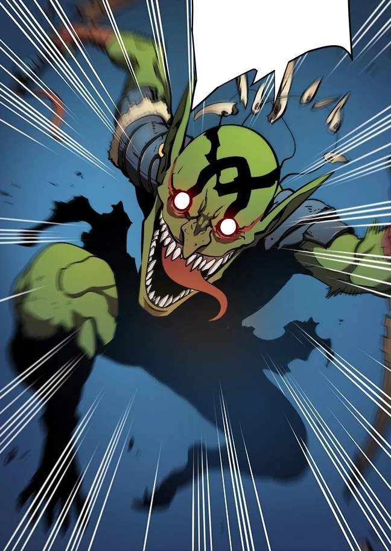

Goblins
Affiliation: Dungeon Monsters
Class: D Rank
Parents: Unknown
Biography
Goblins are low-level monsters commonly found in dungeons. They are known for their cunning and ability to work in groups to overwhelm their enemies.
Abilities
-
🔸 Pack Tactics
Goblins excel in group combat, using their numbers to outmaneuver and overpower their opponents.
-
🔸 Agility
They are quick and nimble, making them difficult to hit in combat.
-
🔸 Trap Setting
Goblins are skilled at setting traps to ambush unsuspecting adventurers.